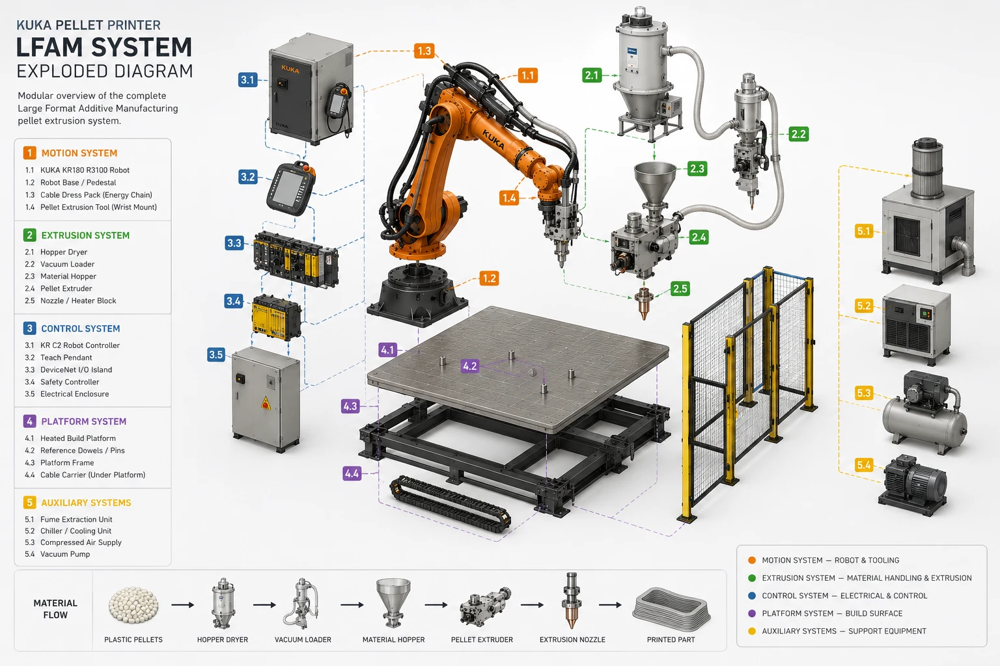
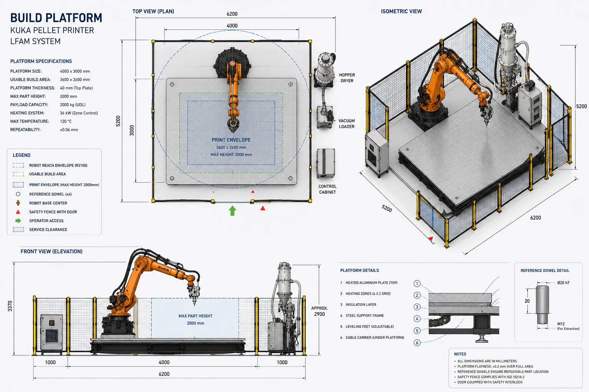
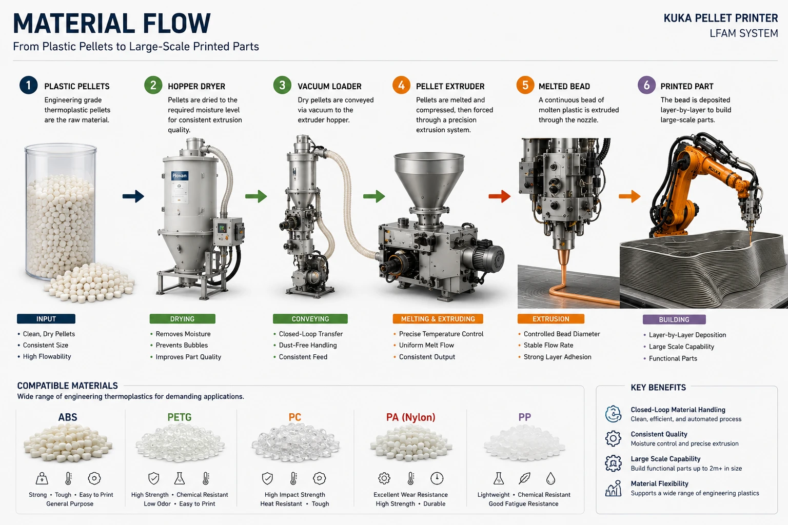
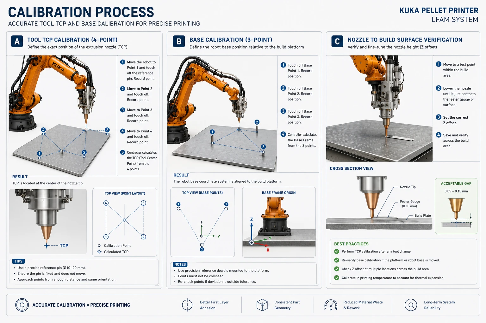
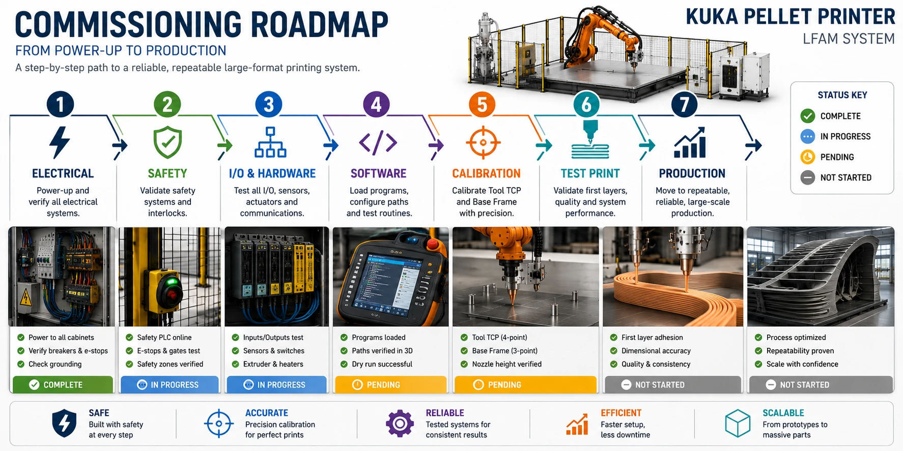

01System & specifications
A 6-axis KUKA arm carries a pellet (granule) extruder and prints large parts directly from thermoplastic pellets — no filament. The motion system and the feedstock chain are in hand; the work is integration, a build platform, control I/O, software, and safety.
Verified robot data (KR 150 / 180 / 210 family)
The KR 150, 180 and 210 share one mechanical platform (1100 mm base arm); they differ mainly in payload and axis speed. "ZH 150/180 I" denotes the KUKA Zentralhand (in-line wrist) rated 150/180 kg — confirming the donor wrist module. Source: KUKA (V)KR 150,180,210 Technical Data.
| Parameter | KR 150 | KR 180 | KR 210 |
|---|---|---|---|
| Rated payload | 150 kg | 180 kg | 210 kg |
| Suppl. load (arm / link arm / column) | 50 / 100 / 300 kg | 50 / 100 / 300 kg | |
| Max reach (base arm) | 3100 mm | 3100 mm | |
| Repeatability (ISO 9283) | ±0.15 mm | ±0.15 mm | ±0.2 mm |
| Robot mass | 1245 kg | 1267 kg | 1267 kg |
| Installed motor capacity | 21.6 kW | 22.8 kW | 23.4 kW |
| Protection / mounting | IP 65 (wrist); floor or ceiling, ≤5° incline; +10…+55 °C ambient | ||
Axis motion ranges (software-limited)
| Axis | Range | Speed @ KR 150 | Speed @ KR 180 |
|---|---|---|---|
| A1 | ±185° | 110 °/s | 95 °/s |
| A2 | +90° … −61° | 110 °/s | 95 °/s |
| A3 | +65° … −209° | 100 °/s | 90 °/s |
| A4 | ±350° | 170 °/s | 162 °/s |
| A5 | ±125° | 170 °/s | 164 °/s |
| A6 | ±350° | 238 °/s | 229 °/s |

02Mechanical & tool flange
Only the extruder head rides on the arm; the control box stays off-arm to keep the moving mass and inertia low. The head bolts to the wrist flange through a machined adapter.
Mounting flange — DIN/ISO 9409-1-A160
The in-line wrist flange is DIN/ISO 9409-1-A160 (Type A, 160 mm bolt-circle). Tooling fastens with M10, grade 10.9 screws; thread engagement 12–14 mm; a locating bushing/dowel fixes orientation. Design the adapter plate to register on the center pilot and one dowel, and follow KUKA's rule that screw grip length ≥ 1.5 × nominal diameter (≥ 15 mm for M10).
| Flange feature | Value |
|---|---|
| Standard | DIN/ISO 9409-1-A160 (160 mm BCD) |
| Fastening screws | M10 × grade 10.9 |
| Thread engagement | min 12 mm / max 14 mm |
| Locating | center pilot register + locating bushing (dowel) |
Payload, centre of gravity & inertia
The pellet head (~6 kg) plus adapter, hose drag and any on-arm feed tube must stay within the wrist's load model. Nominal design point: load CG at Lz ≈ 240 mm from the flange face, Lxy ≈ 270 mm from the A6 axis; permissible mass moment of inertia ≤ 75 kg·m² (KR 150). Compute the real values in KUKA.Load and enter them in the controller — an out-of-spec CG/inertia degrades path accuracy and can trip drive faults.
Model the head + adapter
Get mass, CG and inertia of the extruder head, adapter plate, mounted hose section and any cable carrier. Keep the control box and reservoir off the arm.Machine the adapter to A160
160 mm BCD, center pilot, dowel bore; material thick enough to be stiff under bead-reaction and decel loads. Route the melt/feed lines so they don't snag through the A4–A6 range.Enter load data
Run KUKA.Load; enter mass/CG/inertia as the active TOOL load. Verify the arm accepts full-speed moves across the print envelope without overload warnings.
03Foundation & build table
The robot base and the print table must not move relative to each other — they share one rigid datum, ideally one concrete slab. If the table shifts, the calibrated BASE frame is lost and Z accuracy goes with it.
Foundation
| Requirement | Value (representative KUKA spec) |
|---|---|
| Concrete thickness | ≥ 200 mm (heavier cells ~400 mm) |
| Concrete grade | C20/25 (EN 206-1) |
| Anchors | chemical (resin-bonded) anchors, Dynamic Set |
| Base loads (design) | Fv 24 kN · Fh 18 kN · Mk 49 kN·m · Mr 38 kN·m |
Build table
Build a stiff steel weldment with a thick flat top plate. Use cast aluminium tooling plate (MIC-6 or ATP-5/Alca-5) for the build surface — it is internally stress-relieved and holds flatness, where rolled 6061 will not.
| Plate | Flatness (as supplied) | At thickness |
|---|---|---|
| MIC-6 (Arconic) | 0.005" (0.13 mm) | ≥ 19 mm (¾") |
| ATP-5 / Alca-5 | 0.005" (0.13 mm) | ≥ 16 mm (⅝") |
- Top plate ≥ 15–25 mm on a welded steel sub-frame; flycut/grind after mounting and verify with a straightedge.
- Anchor to the same slab as the robot; level on adjustable feet.
- Machine 2 dowel bores + a datum edge so the BASE frame can be re-taught identically after a bed/plate swap.
- Mount the heated bed on a thermal break so the frame doesn't sink the heat.

04Heated bed & thermal
Big beads shrink as they cool and try to peel off the plate. A heated bed plus a warm chamber keep the temperature gradient low — controlling warp and building interlayer bond strength.
Heater sizing & control loop
Spec a silicone heater at a conservative 2.5–5 W/in² and oversize the area (lower element temperature = longer life). Large LFAM beds land in the 1.5–5 kW+ band; use 240 V to keep current sane. Heat one zone as an independent loop the robot never touches:
Estimate power from Q = m·c·ΔT (cAl ≈ 900 J/kg·K) and add ~25% margin. Worked example: a 600×600×10 mm aluminium plate (~9.7 kg) from 20→110 °C in 15 min needs ≈ 875 W for the metal alone, ≈ 1.5–2 kW with losses and margin.
Surface, adhesion & insulation
- Stack: cast aluminium tooling plate → silicone heater bonded underneath → optional PEI sheet or borosilicate as the print surface.
- Adhesion: wide brim (PP needs 10–20 mm) or raft for big beads; temperature-activated adhesives (Magigoo, incl. Magigoo PP; Dimafix for high-Tg ABS/PC/PA). PP adheres only to PP — use PP tape/sheet.
- Insulate: 20–40 mm ceramic-fibre board/blanket under the heater — under-insulation is the #1 reason a bed needs more wattage than calculated (a 5 mm layer tested only 44% efficient).
See §13 for per-polymer bed and chamber temperatures.
05Enclosure, fume extraction & safety
This is a non-collaborative industrial robot. The full guarding regime of ISO 10218-2 applies — do not rely on power-and-force limiting. As the integrator, ISO 10218-2 is your governing standard.
Cell guarding (ISO 10218-2:2025 / ANSI A3 R15.06-2025)
- Fence: guard by height + distance (ISO 13857). Practice: ≥ 2000 mm tall; guards below 1400 mm shall not be used without added measures. Slots ≤ 65 mm; openings >180 mm need additional guarding.
- Gate: safety-rated interlock (ISO 14119) with guard locking; entry forces a stop; restart requires a deliberate action from outside the cell.
- Presence sensing (ISO 13855):
S = K·T + C, K = 2000 mm/s, C = 850 mm whole-body. Large arms are usually hard-fenced, with light curtains reserved for a load aperture. Measure your robot+tool stopping distance to size it. - E-stop (ISO 13850): use Stop Category 1 (controlled decel, then power off) for a heavy arm carrying a hot end.
- Functional safety: design safety functions to PL d, Category 3 (≈ SIL 2) — dual-channel with monitoring.
Hot-surface, pinch & crush
A 350 °C nozzle is ~5–7× any burn threshold. Per ISO 13732-1 (bare metal), a 1-second touch burns at ~67–73 °C; 1 minute at 51 °C. Keep touchable surfaces near the hot end below ~65 °C or guard/insulate them, and add a hot-surface warning. The arm's mass-in-motion makes impact/crush the dominant severe hazard — size the safeguarded space to max reach + tool envelope + stopping distance.
Fume extraction
FDM/FGF emits ultrafine particles and VOCs (ABS → styrene; nylon → caprolactam). Enclose the cell and extract at source:
| Parameter | Target |
|---|---|
| Filtration train | HEPA H13/H14 then activated carbon (HEPA alone does not capture styrene/caprolactam vapour) |
| Best practice | enclose & exhaust outdoors (NIOSH) |
| Capture velocity | 50–100 ft/min (0.25–0.51 m/s) at the nozzle |
| Duct transport velocity | ≥ 3500 ft/min (≥ 17.8 m/s) for particulate |
06Electrical & power
The KR C2 connected load is its nameplate rating — not the sum of axis-drive ratings. Size the feeder to the plate.
| Parameter | Value (KR C2 ed2005) |
|---|---|
| Supply voltage | AC 3×400 … 3×415 V (−10% / +10%), 49–61 Hz |
| Rated connected load — standard | 7.3 kVA (rating plate) |
| Rated connected load — heavy-duty | 13.5 kVA (palletizing/press duty) |
| Mains fusing | 3×25 A min … 3×32 A max, slow-blow |
| RCCB trip (if used) | 300 mA, universal-current sensitive |
| Controller protection / max axes | IP 54 / 8 axes (6 robot + 2 external) |
- A licensed electrician runs the 3-phase feeder, disconnect and grounding, sized to the cabinet rating plate (confirm 7.3 vs 13.5 kVA on your plate).
- The heated bed/chamber, extruder control box, dryer and autoloader each go on their own circuits — these are large independent loads, not part of the robot's 7.3 kVA.
07Control I/O & DeviceNet
The KR C2 is a native DeviceNet master via its MFC3 card. Add a small remote-I/O island — that island is the entire extruder-integration core. The robot does only three things to the extruder: RUN/STOP, set speed, read fault.
DeviceNet I/O island
| Position | Terminal | Function |
|---|---|---|
| Coupler | BK5200 / BK5250 | DeviceNet bus coupler (e.g. MAC ID 5, 500 kbaud) |
| Slot 1 | KL1xxx (e.g. KL1408 DI) | Extruder fault / ready inputs (24 V) |
| Slot 2 | KL2xxx (e.g. KL2404 DO) | Extruder RUN/STOP, heater enable (24 V) |
| Slot 3 | KL4004 (4-ch AO 0–10 V) | Extruder speed setpoint |
| End | KL9010 | Bus end terminal (required) |
Analog scaling — get this right
$ANOUT[1] is a REAL from −1.0 … +1.0 (fraction of full scale): $ANOUT[1]=1.0 → 10 V, 0.5 → 5 V. To command a voltage: $ANOUT[1] = volts / 10.0.iosys.ini & system-variable mapping
Set the master node/baud in devnet.ini (index must start at [1]), then map physical bytes to KRL variables in iosys.ini. Analog channels occupy the start of the I/O image, which pushes the digital output byte back — so the digital offset is not 0:
| KRL variable | Physical | Use |
|---|---|---|
$IN[1..8] | KL1xxx via INB0 | 1 = fault, 2 = ready (your assignment) |
$OUT[1..8] | KL2xxx via OUTB0 | $OUT[1]=TRUE → extruder RUN |
$ANOUT[1] | KL4004 ch.1 via anout1 | speed setpoint, REAL −1.0…+1.0 |
$ANOUT[1]=1.0 (expect ≈ 9.997 V).X11 safety circuit (ESC)
The KR C2 safety system is the ESC — a dual-channel, computer-monitored closed ring. External safety devices enter through connector X11 and are wired as a test-output → contact → input loopback, per channel (A and B). This is why a single jumper is never acceptable.
| ESC signal | Meaning | Channels |
|---|---|---|
| ENA | External EMERGENCY STOP | A / B |
| NA / LNA | Local E-stop (KCP button) | A / B |
| BS | Operator Safety (safety gates) | A / B |
| QE | Qualifying input (range limit / load station) | A / B |
| ZS1 / ZS2 | Enabling switch / panic | A / B |
| BA | Operating mode (Test / Auto) | A / B |
| TA(A) / TA(B) | Test-pulse outputs (24 V) | A / B |
08Extruder integration
For a servo-driven pellet head (the class of MDPE10 / CEAD), the control interface is the servo drive's I/O — which maps cleanly onto the three robot signals above.
| Robot signal | Extruder interface | KRL |
|---|---|---|
| RUN / STOP | servo enable digital input | $OUT[n] |
| Set speed | 0–10 V analog velocity command | $ANOUT[1] |
| Fault / ready | drive alarm/ready digital output | $IN[n] |
Process rules that differ from filament FDM
- No retraction. The screw turns one way only — plan continuous-deposition toolpaths; add a mechanical anti-ooze/needle valve if seam ooze is a problem.
- Heaters off when idle. A barrel held hot degrades its melt charge (can require a screw replacement). Purge 250–500 g before a stop or material change.
- Active vacuum feeding. A vacuum loader conveys dried pellets to the head hopper; route the hose on swivel points so it follows the arm.
- 3–4 PID heat zones (feed / transition / metering + nozzle), Type-K thermocouples — each self-regulating, never on the robot.
Bead geometry & throughput
Pellet heads are screw-flow-limited, not nozzle-limited — a bigger nozzle lays the screw's fixed output as a wider/slower bead. Rules: bead width ≈ 1.1–1.5 × nozzle; layer height ≈ 0.4–0.5 × bead width (going higher risks weak interlayer bonds). For a ~4 kg/h head, pair a 2.5–3 mm nozzle and run ~40–100 mm/s at constant speed for constant flow.

09Software & simulation
Four ways to get from CAD/STL to robot motion. For a KR C2 (KSS 5.x), the pragmatic path is offline KRL — generate, simulate, then transfer; do not stream for production printing.
| Path | Model | Fidelity / control | Multi-axis | Cost | KR C2 fit |
|---|---|---|---|---|---|
| CuraToKRC2 | Static KRL playback (.src, $ANOUT[1]) | Low — planar, fixed wrist, naive chunking | No (3-axis) | Free (GPL) | Purpose-built; analog flow + C_DIS blending; RAM-chunked |
| KUKA|prc | Parametric KRL (.src+.dat) | High — full sim, collision/singularity/reach | Yes (true 6-axis + ext. axes) | Free community / €450 academic | KR C2 supported; proven LFAM precedent |
| RoboDK | Offline post (KRC2 post) | High — KRC2 post has 3D-print mods built-in | Good | $3,995 Pro | KRC2 / KRC2_DAT posts; kukabridge offline transfer |
| ROS RSI (kuka_experimental) | Streamed joint correction (UDP, 12 ms) | Real-time but research-grade, brittle | Yes (you own kinematics) | Free (OSS) | Confirmed KR C2 + KSS 5.x via RSI 2.2/2.3 |
$ANOUT[1] mapping and DeviceNet I/O on flat test prints. Production: RoboDK Professional with the stock KUKA KRC2 post (which already includes 3D-printing modifications), KRC2_DAT for large toolpaths, analog flow via PRINT_E_AO → $ANOUT[n], on/off via M64/M65 → $OUT[n]. If you need non-planar / multi-axis: KUKA|prc. Avoid for production: any real-time streaming (ROS RSI / RoboDK online).CuraToKRC2 — what it does
An open-source Cura output plugin that exports .src KRL. It writes a printMain.src orchestrator that calls chunked printN.src subprograms (default ~25,000 lines/chunk for KR C2 RAM). A krl_config.json sets tool A/B/C orientation, HOME, Tool/Base numbers, and the flow constant; flow is mapped to $ANOUT[1] with a TRIGGER WHEN DISTANCE at the start of each print move:
Cura settings for LFAM pellet
| Setting | Desktop FFF | LFAM pellet |
|---|---|---|
| Nozzle size / line width | 0.4 / ~0.48 mm | nozzle as fitted / ≈ 1.1–1.25 × nozzle |
| Layer height | 0.2 mm | ≈ 0.4–0.5 × bead width |
| Print speed | 50–60 mm/s | ~15–100 mm/s, held constant (steady flow) |
| Retraction | on | off — use coasting / wipe ≥ line width |
| Relative extrusion | off | on (M83) |
| Walls | 2–4 | 1 (single bead) or 2; spiralize for hollow |
| Cooling fan | on | off / very low — manage layer time for weld strength |
ROS RSI — fine-grained reality
The kuka_rsi_hw_interface in ros-industrial/kuka_experimental streams RSI XML over UDP. The KR C2 sends a <Rob> packet every IPO cycle with an IPOC counter; the ROS PC must reply with axis corrections carrying the matching IPOC within ~10 ms or the controller faults. The repo's krl/KR_C2/ros_rsi.src uses the older ST_* RSI-2.x API (distinct from the KR C4 .rsi object diagram) — confirmed working on KSS 5.x with RSI 2.2/2.3; UDP port 49152; per-axis corrections AK.A1…AK.A6.

103D models & the digital twin
Build a digital twin to verify reach and collisions in the print envelope, author/verify toolpaths offline, and validate the BASE/TOOL frames before touching the real arm.
Where to get the 3D model
| Source | KR models | Formats |
|---|---|---|
| KUKA Download Center / Xpert (login) | KR 150 R3100-2 etc. | STEP/IGES (behind my.KUKA login) |
ROS-Industrial kuka_kr150_support | kr150_2 (KR C2-era arm), kr150r3100_2 | .dae visual + .stl collision, URDF/xacro — open, no login |
| RoboDK robot library | KR 150 R3100-2 + variants | .robot (sim-ready) |
| TraceParts / GrabCAD | KR 150/180/210 family | STEP, IGES, STL, native CAD |
The ROS-Industrial meshes are the most accessible (open, inspectable). The repo's kuka_kr150_support ships two arm variants — use kr150_2 for a true KR C2-era machine — with one .dae/.stl per link (base_link, link_1…6, flange, tool0) and an OPW kinematic definition. Mount your extruder mesh at tool0.
Simulators
| Tool | KR C2 realism | Offline KRL | Cost |
|---|---|---|---|
| RoboDK | KRC2 post-processors (since KRC2) | Yes — .SRC/.DAT | Paid (free trial) |
| ROS · MoveIt / RViz / Gazebo | URDF only — no controller emulation | No (ROS trajectories) | Free / OSS |
| KUKA.OfficeLite + KUKA.Sim | Highest — runs the real KSS image as a Virtual Robot Controller | Native, bit-accurate | Licensed |
| Visual Components | Cell-level KUKA sim | Via plugins | Licensed |
kuka_kr150_support + MoveIt/RViz as a free cross-check of reach and joint-limit collisions. Reserve KUKA.OfficeLite/KUKA.Sim for final validation if the posted KRL must be guaranteed identical to hardware — note a KSS 5.x VRC image may be legacy/hard to license today.→ Open the interactive 3D twin — a browser model of the KR 150 (built from kuka_kr150_support) where you can jog all six axes and read the live tool-tip position against the print envelope.
Representative joint limits from the ROS-Industrial URDF (radians): A1 ±3.23, A2 −2.44…−0.087, A3 −2.09…+2.93, A4 ±6.11, A5 ±2.18, A6 ±6.11 — consistent with the degree ranges in §1.
11Calibration
Tie the model, the nozzle and the table together: a Tool (TCP) frame at the nozzle tip and a Base frame on the table. Calibrate hot.
Tool (TCP) — XYZ 4-Point
Jog the nozzle tip to one fixed reference point from 4 sufficiently different orientations; the controller computes the TCP (accept error < 1.0 mm). Enter the tool A/B/C to match your software config. Save as the Tool number.Base — 3-Point
With the taught TCP, touch the table's three reference features: origin, a point on +X, a point in the +XY plane. This builds the print coordinate frame. Save as the Base number.Calibrate hot
Aluminium grows ~23 µm/m·°C — a 1 m plate moves ~2.3 mm over 100 °C. Teach the Base frame at operating temperature, not cold.Nozzle Z-offset
Lower the nozzle to a feeler gauge / surface; set the Z offset to a 0.05–0.15 mm first-layer gap; verify at multiple points across the build area.Verify
Jog to Base 0,0,0 — the nozzle should sit at the table origin with +X/+Y along the table edges. Re-touch references after any crash.
12Commissioning & first print
Gate everything on safety. Do not run the arm near the table until the door interlock and every E-stop are proven to stop it.
Electrical
Power to all cabinets; verify breakers, grounding, E-stops. Bring up the bed/chamber loops on their own circuits.Safety validated
Replace the X11 jumpers with real dual-channel devices; prove the gate interlock and every E-stop physically stop the robot. (Qualified integrator.)I/O bench test
Verify$IN/$OUT/$ANOUTagainst the DeviceNet island with a meter; confirm$ANOUT[1]=1.0 → ~10 Vand RUN/STOP toggling — extruder de-energized.Tool & Base calibration
TCP 4-point, Base 3-point, Z-offset — hot (§11).Dry run in air
Run a sliced program at height, extruder off; check reach, collisions, blending and chunk seams against the simulation.Heat soak
Bring the bed and chamber to setpoint; dry the pellets to spec (§13).First print (PP / PETG)
A small single-wall part: tune flow constant ($ANOUT→ bead width), layer time and adhesion.Scale up
Larger parts and engineering resins (ABS/PC/PA) once the process is repeatable.

13Materials reference
Per-polymer windows. Values vary by grade — always defer to the resin TDS; PET/PETG, PC and PA are hydrolysis-sensitive and must be dried in a closed-loop desiccant dryer to −40 °C dew point.
| Polymer | Class | Bed °C | Chamber °C | Dry °C / hr | Hydrolysis |
|---|---|---|---|---|---|
| PP | semicryst. | 85–100 | warm enclosure | (low uptake) | no |
| PETG | amorphous-ish | 70–90 | ~60 | 65–70 / 4–6 | yes |
| ABS | amorphous | 100–110 | ~80–110 | 80–90 / 2–4 | no (cosmetic) |
| PA (nylon) | semicryst. | 70–90 | enclosure req. | 80 / 4–6 | yes |
| PC | amorphous | 110–130 | ~80–120 | 120 / 2–4 | yes |
| PET | semicryst. | 70–90 | ~60 | 150–180 / 4–6* | yes |
*PET must be crystallized above Tg (~80 °C) before high-temp drying or it cakes. All hygroscopic resins: −40 °C dew point, dew-point + inlet-temp alarms on the dryer.
14Bill of materials
Entry-path budget for the items still to buy. Costs are planning estimates (USD); the gating item is the extruder control interface.
| Subsystem | Item | Status | Est. cost |
|---|---|---|---|
| Motion | KUKA KR 150/180 + KR C2 + KCP2 | Have | $0 |
| Extrusion | Pellet extruder (4 kg/h servo) | Have | $0 |
| Material | Hopper dryer + vacuum autoloader | Have | $0 |
| Control | Extruder I/O interface (DeviceNet island) | Buy — gating | ~$300 |
| Extrusion | Flange adapter plate (ISO 9409-1-A160) | Buy | ~$1,000 |
| Platform | Heated build bed (Al + silicone + PID) | Buy | ~$2,500 |
| Platform | Rigid print table (steel weldment) | Buy | ~$1,500 |
| Safety | Fencing / interlocks / E-stops | Buy | ~$4,000 |
| Electrical | Electrician install (feeder + disconnect) | Buy | ~$3,500 |
| Control | Toolpath software (RoboDK Pro, optional) | Optional | ~$3,995 |
Entry-path hardware (excluding optional software): ≈ $12,800.
15Sources
Primary and reputable references used to compile this manual. Pin numbers, ratings and material windows must still be confirmed against your specific equipment.
KUKA hardware, controller & safety
- KUKA — (V)KR 150,180,210 Technical Data (payload, reach, axis ranges, flange A160): robot-store.co.uk KR210 manual PDF
- KUKA — KR C2 edition2005 Specification (7.3 kVA, voltage, DeviceNet/MFC3, IP54): kr_c2_ed05_spec.pdf
- KUKA — KR C2 ed2005 ESC Electronic Safety Circuit (X11, ENA/BS/QE, jumper plug): ESC workbook PDF
- KUKA — KR C2 DeviceNet: KRC2 DeviceNet PDF
Electrical / DeviceNet
- Beckhoff — KL400x Analog Output (KL4004 wiring; 10 V = 0x7FFF = 32767): kl400xen.pdf
- Beckhoff — BK52x0 DeviceNet Bus Coupler (BK5200/BK5250, MAC ID, terminator): bk52x0en.pdf
- robot-forum.com — iosys.ini DeviceNet config (anout1 CAL32768, byte offset): thread 25109
Extruder, platform, materials & safety
- Massive Dimension MDPE10 (servo, 0–10 V, 4 PID zones): massivedimension.com
- Dyze Design Pulsar — flow-to-RPM, no retraction: docs.dyzedesign.com
- ORNL / Cincinnati BAAM design guidelines (bead/layer ratios): BAAM Design Guidelines
- ISO 10218-2:2025 (robot cell integration): iso.org/standard/73934
- ISO 13732-1 (hot-surface burn thresholds): ISO 13732-1 sample
- Novatec — resin drying dew point: novatec.com
Software, models & simulation
- CuraToKRC2 plugin: github.com/nikoladim123/CuraToKRC2 · robot-forum 55449
- ROS-Industrial — kuka_experimental (KR_C2 RSI driver, kuka_kr150_support) · ros-industrial/kuka
- KUKA|prc (Robots in Architecture): robotsinarchitecture.com
- RoboDK — robot 3D printing & KRC2 post: robodk.com 3D printing · KR 150 R3100-2
- KUKA.OfficeLite (virtual KR C): kuka.com OfficeLite